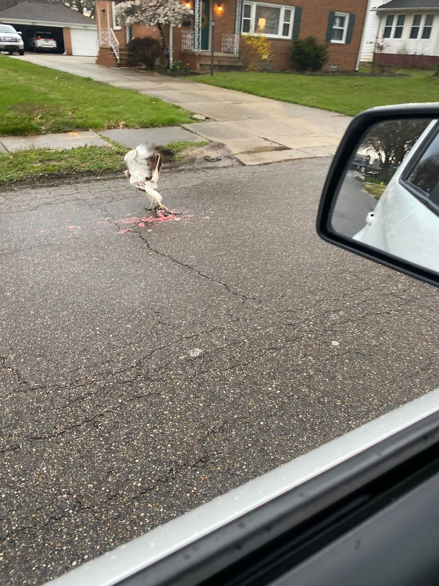

Mobile uploads
This hawk found a freshly run over animal in the street in front of my house yesterday.
He is picking up the carcass and flying away with it.
This is what Carl Jung would call synchronicity. It’s the meaningful coincidence of two or more events.
I immediately knew this hawk was telling me the story of Easter.
This was a terrible day (the worst day) for that poor creature run over in the street. It was a wonderful day for the hawk.
Destruction ALWAYS leads to construction.
EVERYTHING that dies and is reborn. Every dead thing is risen.
Everything that dies lives.
For me, Easter isn’t amazing because a person was risen from the dead. That happens multiple times in the Bible. It’s amazing because the story tells the universal truth that the end of the story is never death. It is just the beginning of a new story.
Happy Easter!